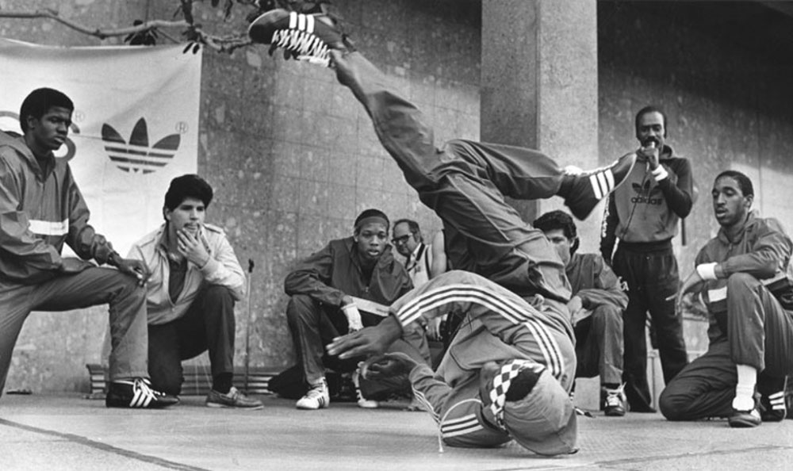

비보이 브라더즈 소개
1970년대 초 미국 뉴욕 브롱스(bronx)의 클럽들에서 자메이카 출신인 DJ kool herc가 음악의 break부분,즉 가사가 없이 비트만 나오는 부분을 강조하기 시작하고, 그 break time에 등장해서 춤을 추는 댄서들을 break-boy, 즉 b-boy라고 칭하게 되었다. 첫번째 비보이로 알려진 사람은 bboy spy이며 비보잉의 기초(파운데이션)가 되는 기술들(six step, swipes, cc 등)이 그때에 개발되었다.
소수의 댄서들을 통해 전해 내려오던 이 신선한 춤은 락스테이디 크루(Rock steady crew), 뉴욕 시티 브레이커즈(newyork city breakers)등의 차세대 비보이들이 더욱 세련되게 가다듬었다. 이후 80년대에 들어 언론의 집중적인 관심을 받게 되면서 전